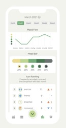
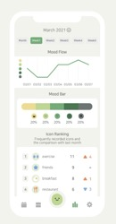
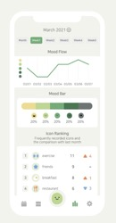

We use monthly calendar to record our mood flow. We tap the mood beans and activity icons for a simple record.

Dairy Entries & Mood Flow
We can use the diary entry section to write down things happening on a day. We can also access to our weekly and monthly report of our mood flow.
Dive Deep into Our Life
The app uses statistics to analyse mood and activity on a weekly and monthly basis. We can also choose to back up our data in case we lose it.
Research methods
What anthopological approaches do we use to conduct our research?
Online Interviews
Interviews conducted with our parents provide valuable data for our ethnographic project. We think about how our relationships with our parents might affect what they say and the siginificance of the difference between what they say and what they do. Interviews prove to be useful for us to analyse how research participants represent their inner beliefs about the social worlds around them.
Autoethnography
Doing autoethnography allows us to immerse ourselves as much as possible in our daily interactions with the app itself. We take into account how our own positionality and our relationships with our parents might affect our research findings. We study whether and how digital diary apps like DailyBean might support or undermine our self-expression by reflecting on our own experiences of using it.
Research Records
How do different generations tend to have different embodiment experience of using the app? (Click into each session to see individual reflections. Note: all the contents shared below were with consent from our parents and our team members).
At the first week of our research, we identified our research topic, questions and aims. We decided to compare how different generations experience and interact with a data-tracking app similarly or differently. And we aimed to understand how this app can support or undermine our self-expression.
March 14th - March 16th
Ethics Form and Participant Information Sheet
We identified research participants: we and our parents. We then started to fill our ethics form and participant information sheet. We shared it with our parents to let them know what our research was about and what support we neeeded from them.
March 17th
Starting our Interactions with the App
We started our own interactions with the app by donwloading it on our phones and using it to keep track of our lives on a daily basis. We also reminded our parents to use the app at the same time and we comunicated with them regularly to check if they had any technical difficulties of using it.
April 2nd - April 5th
Finalising First Interview Questions
We started to form our interview questions. We communicated with each other among the team and shared field notes we had. We then identified 10-15 questions that we thought might help us understand further the embodimentd experiences of our parents and us after using the app for half a month.
April 7th - April 10th
Interviews among Team Members
We reflected on our own experiences and positionality. Other than writing down our own field reflections, we asked each other questions about our usage of the app, how we tended to interact with it, and whether the app became a way of self-expression.
April 15th
Online Interviews with Our Parents
We conducted our first interviews of our parents. We prepared a set of questions and also extended from the answers that our parents provided and tried to ask more relevant questions in order to get a gimplse of how their expereince of using the app might be significantly different from ours.
April 17th
Sharing First Interview Results among the Team
We shared and disccused the first interview results with our team members. We identified several similar but also different ways of using the app between us and our parents. We also considered how our ways of asking questions and how our relationships with our parents might affect the answers they provided to us.
April 18th
Amending Second Interview Questions
We finalised on our second set of questions for interviewing our parents. Drawing from the experience we gained from our first interviews with our parents, we asked more specific questions this time, mostly around data tracking.
April 19th - April 20th
Online Interviews with Our Parents
We conducted our second interviews with our parents.
April 22nd
Sharing Second Interview Results and Our Field Notes among the Team
By sharing our second interview results with each other, we started to draw conclusions to the research questions we set before. We also shared all the field notes we produced during the whole research process and discussed not only how different generations may have different embodiment experience of using the journalling app but also how we also tended to interact with the app or our digital devices differently based on our own culture, beliefs and ideologies.
April 23rd - April 27th
Making Conclusions and Designing Creative Website
We made conclusions to our research questions and started to build a website to demonstrate our findings.
All about
managing
our time
Conclusion
What do we find out through conducting our research project?
After sharing discussions with parents and our own experiences, we were surprised to find age as not being the primary determining factor in having an embodied digital diary experience. There were other limiting factors that disrupt embodiment, which stretch across the generation gap.
These limiting factors include screen time, data usage, technical difficulty and mitigating affordances. The app in question, Dailybean, struck a balance allowing for maximum embodiment: low screentime requirement, no intrusive data being obtained, high level of use and accessibility affordances with massive implications for less able individuals.
Embodiment was also affected by preconceptions of what diarising is, but this wasn’t restricted to a certain age group. Those of the older generation were willing to buy into a novel format just as much as the younger generation were dissuaded by it.
Ultimately, the freshness of a new app wore off for all and more elements would need to be added for it to become a long-term habit.
References
What theoretical work do we look at during the process of conducting our research?
Our Amazing Team
Together we are stronger.
Ashley Yang
Website Designer
Jamie Laughton
Project Manager
Hazel Li
Research Interviewer
Thanks a lot for staying till now. Now it's your turn to reflect on your embodiment experience of going through the website. How does using online platforms affect your bodily and sensory awareness?
Contact Us
Let's talk!
Hazel’s Field Reflections
"I'm still not interested in keeping a diary, I would rather post my life on social media platforms for all my friends and family to see. The lack of social features of this app is one of the reasons why I might stop using it after our research is done."
There has been much discussion on the issue of whether mobile apps will eliminate people’s self-expression. Eliminating self-expression can be identified as "when we don't express ourselves, we repress important parts of who we are and cause ourselves considerable struggle and lasting mental and emotional pain" (Stockton, 2019).
My First Field Reflection
The expectation for me in this app, a university student, is to record my life at school, so that I reflect what I’ve done in the future. My observation lasts from Mar 7 to now. In the first place, I was interested with the design. Even I forgot to record my day, the reminder will remind me to record it. After 3 weeks, my feeling of freshness add passion in using this app started to reduce because of its single function, the ads when finish recording, and my single life. I don’t want to open the app, so my recoding frequency reduced from once a day to once a week. The app design is easy so there are no technical difficulties. Me personally didn’t feel intrusive because even I turn on the reminder, I will often forget to record my day since my sense of freshness passes away. There is no influence on me in the offline activities, because I feel what I did is for my own happiness but not for a nice recording data. Therefore, this app doesn’t play an important role that influencing my social activities. This app is more like a record than a encouragement. I tried to keep a offline diary before, but due to the heavy school work, my time can’t share any more time to it. The reminder would increase the anxiety for me. It reminded me that I didn’t finish writing the diary for my project for a few days.
My Second Field Reflection
My feeling stays the same. I still can't get interested in DailyBean and I record it once a week. The function is simple so there is no new thing to explore. After using this app, it did have some effect on my mood, but it doesn’t affect my behaviours. The app will record what I exact experienced and what I think, therefore, I will still feel how I felt at that time when I look back. It’s also memorable in the future because part of my youth is recorded in the app. My expectation of this app is not high. I expect it will keep my experience only. The simple function didn’t give me further expectations. The symbol-function should be improved because they are not enough to represent my life. I’ll continue to find a new one with more functions. Moreover, I don’t have a concern about the release of data because the diary inside doesn’t include financial reports or political secrets.
ashley’s field reflections
“One interesting thing I found about myself through using this app was that I started to keep regular diary on it. This was something I never successfullly did when I didn’t have access to smartphones and digital platforms.”
"The past decade has seen a dramatic efflorescence in individuals’ use of digital technology to gather information about themselves through mobile apps and networked device" (Schull, 2021). As a part of our research purposes, I paid a good amount of attention to my own experience of using DailyBean and how my interaction with it supports my self-expression. By storing my private information, this app keeps track of my everyday moods, feelings and activities. And by looking back at the data which shows how my mood was changing on a daily basis, my sense of time is also being amplified.
My First Field Reflection
My general thoughts and feelings: I started to use the app since the mid of March. At the very beginning, the app’s design and cute bean icons attracted me into using it everyday to record my moods. I used its diary function a lot and I even turned off the notification function for a while as I realised that I could always remember to use it before going to bed every night. After 1 to 2 weeks, it became one of my nightly routines. Even though I was not used to recording my days by writing down dairies either physically or digitally, this app made me realise it would be good to keep track of my everyday lives. Every time when I went back to the home page to see how my mood was flowing and changing day by day, I had a sense that this app was presenting a part of myself.
Any difficulties of using the app? For me, one thing I don’t really like about this app is definitely its advertisements. It demotivated me to use it for a while. Even though the ads were all short, I still had to waste 5 seconds or more doing nothing and just watching the ads. I also complained about this by writing it down on the app’s diary section.
Are you enjoying using the app? Is it giving you utility beyond just being a research project? Personally, I was enjoying using it, but just at the beginning. It allowed me to just “choose” instead of deciding on my own so that I didn’t need to take a lot of time thinking about what kind of things I would like to say about my day. But after a period, as the app started to show ads occasionally, I felt less satisfied with it. I might just end up using it after this research is done.
Do you feel like the app is intrusive? Is the level of detail too much or too little? How willing are you to record this data on your phone? As a proficient user of all the digital devices and online platforms, I know I have to provide my personal information and my data for free in order to get some convenience sometimes. For me all the apps and platforms are intrusive, but they just don’t usually present themselves in that way. Same as Daily Bean, I knew that by uploading pictures to it or by writing my information down on it, it would have access to my personal data all the time. But on the other hand, I didn’t care much about it as long as I would be able to use it by accepting its terms and conditions. However, I still would not put too much of myself on it by uploading my selfies or by writing important notes down on it.
Do you feel like it is changing your offline behaviour? No, for me this app was not as powerful as my other socialising apps on my phone which could make me change my offline behaviour (for example, using socialising apps like WeChat makes me stay connected with my friends and family all the time. It can significantly change my moods and feelings during the day). The primary function of this app is to record my day. And I can choose which icons to use to represent my mood on that day. I would not change my offline behaviour on the day in order to get a smiley bean face when I was using the app (to show that I was happy). Even though I did want to see more smiley faces appearing on my home page sometimes, I still wanted to just stick to how I felt instead of trying hard to force myself to be happy (this is not how I was using the app).
Did you keep an offline diary before? If not why, and are you now using the app? If so, why? One interesting thing I found about myself through using this app was that I started to keep regular diary on it. This was something I never did when I didn’t have access to such digital platforms. I wrote offline diaries occasionally, but only when I felt down and needed a way to get rid of all the negative emotions. But after I turned on this app’s notification function, it reminded me to use it every time before I got to bed. This potentially changed my habit of not writing regular diaries and made me start to record my days no matter what I felt (linking back to the last question, I just realised that this might be the only thing in my life that the app actually had impact on). I did, however, occasionally chose not to use the app’s diary section as I didn’t know what to say about my day when I just stayed at my room all day doing nothing. I would definitely keep a record of those memorable events and people I met during the day on this app.
Are you conscious about your screen time? Do you feel like using Daily Bean increases your screen time? Annoyed by notifications, or happy to be reminded to use the app? I did set up a screen time limitation for myself before, but it didn’t help me much, so I ended up turning if off. Even though I was still conscious about my screen time I paid less attention on how each app contributed to it. Using Daily Bean did not increase my screen time in my opinion, as I would also scroll through contents provided by other apps if I didn’t use it. Its notifications, sometimes, did annoy me, especially when I was using my phone for socialising purposes. I would ignore the notification for a while and used the app later.
Do you feel less motivated to tell friends/family about your day, now that you are writing it in the app? Has it given you more of an opportunity to talk about your day, express your feelings? Has it made you less social? Somehow, yes. One of the reasons I talked to my friends and my family about my day was that I felt depressed or needed some suggestions/help from them regarding either my social or academic life. However, I accidentally noticed myself not talking to my friends about my feelings even though I went through a tough time on a day. The reason was I already used the app to record my day and I unconsciously assumed that “someone” had already knew about it. But it didn’t really make me less social as I would still remember to share some other important parts of my life that I did not want to just write down on the app with my friends.
My Second Field Reflection
My general thoughts and feelings since the last time: So far, I have used Daily Bean for over a month. Because of its design and dairy function, I really liked this app at the beginning, but once that sense of freshness was gone after a few weeks of using it, I couldn’t really motivate myself into opening it, recording my moods by clicking on a few icons, and writing my thoughts down in words in the app’s diary section. Unlike other socialising apps installed in my phone, I felt this app was not really designed for a long-term use --- even though by tracking your data you might be able to get a stronger sense of time, or you might be able to be more aware of those memorable events happening in your life. But these didn’t offset the inconvenience this app brought to me. I was simply tired of watching ads and recording my holidays (yes the research was done in a holiday which might be one of the reasons why I simply didn’t want to work on or write anything even digitally).
Do you think using the app over the last month has had an effect on your daily mood/behaviour? Not really. As mentioned above, the app made me more aware of the memorable events that were happening in my daily lives. I would remind myself of writing these events down. I would not make an attempt to make myself happier simply because I wanted to see a smiley face appearing on the app’s home page on a certain day. So, this app didn’t really infiltrate into my everyday lives too much.
What do you expect from a diary app? Which features would you need to be more invested in the app? One thing is definitely to make itself free. Ads were probably the major reasons why I wanted to stop using the app itself, even though its design and every other functions were performing really well. I also wanted to have the ability of designing my own icons, not just the ones the app offered.
Would you continue to seek apps that perform a similar task but have the features that you desire? Probably not. As I don’t really have a habit of keeping diaries, I’m tired of using apps that have functions like this. Even though this app did motivate me for a small period of time to keep regular diary, I ended up losing a momentum of doing that after I was tired of using the app itself.
Concerned about release of data? Yes. Most of the things I recorded on this app so far were pretty private. They might not be really important compared to other parts of my life that I would usually share with my friends or family, but they were things that I consider to be personal. My moods, my feelings, things happened on a day that made me happy or upset, they were significant to me and they all represent parts of me.
At the end of my field reflections, I also want to reflect on the ethnographic approach that I used. Doing autoethnography enables me to turn my focus inwards to "explore how a particular experience feels"(Hine, 2017). Simply put, I am able to directly link my own reflections and experiences to the research results that we are about to produce by recording my own usage of the app everyday, including at what time I usually open it, what functions I usually use and how much time I usually spend on it.
Jamie’s Field Reflections
"I found myself casually tapping without much consideration. It came across too light-hearted to be a tool for real change."
Screen Time
I am very conscious of my screen time, more so on my smartphone rather than my computer. I associate my smartphone more with a place of distraction more so than productivity. The notification to use this app, as little time as it takes up, is a reminder to use my phone. In conversation with my parents my mother noted that it doesn’t prompt her to then waste time afterwards on her phone, whereas I would tend to browse and use other apps. Considering the notification came in the evening, it meant I would be reminded to use the app and then spend up to an hour on it, wasting time I otherwise had I not seen a notification.
Data
In contrast to my parents, who don’t understand how data is obtained and used by app providers, I have studied the process and know how it works. Despite this, as with most of my other online experiences, I turn a blind eye and wilfully agree it all away. One aspect I am conscious of is my online footprint – I make concerted efforts to reduce evidence of my presence online. I do this by keeping as few accounts as possible. I would have had reservations about using the app if I had to make an account, especially one that cannot be erased easily.
Embodiment
Being part of the generation who has used smartphones for most of their life, the layout and functionality came naturally to me. Still, I couldn’t help but think that the emoji art style was targeted at an even younger group of people. This didn’t turn me off, but it made me take the app less seriously. I would be open to an app that measures mental health, as this has been a concern of mine lately, but for me it would need to be taken more seriously. It came across too light-hearted to be a tool for real change. I found myself casually tapping without much consideration. It didn’t prompt a deep searching within myself for true emotion.
My parent’s approach to the app was severely affected by their preconceptions of what a diary is supposed to be. For me, this app wouldn’t occupy the space that a traditional diary would take up, but apps of this kind have massive potential in areas where the physical medium lacks. I am someone who’s offline behaviour can be affected by their online activity, so I would continue to seek out an app like this with improved features.
Conclusion
With regards to methodology, I was pleased with how successful inviting my parents to become participants proved to be. I had reservations about how our existing relationship may impede the integrity of results, but I leaned into the resources my subject position affords, given I already had the practical and specialized knowledge of how to conduct myself with my participants (Boellstorff, T., Nardi., B., Pearce., C., & Taylor, T. L. 2013).
The interviews were very casual – I could sense them easing in and opening up. The first stretched for over 30 minutes, which was necessary to make them comfortable with the format. The second didn’t require such acclimatisation - productive answers were reached much sooner. I already ‘spoke their language’, I knew which buttons to press and where to steer them to keep the conversation flowing and fruitful.
Upon reflection, I’m surprised how similar mine and my parents’ feelings come across. I thought that by taking participants of essentially the same background, almost scientifically setting control variables, and isolating the independent variable of age, we would confront the research question precisely. This may have been the case, therefore I could conclude that age wasn’t much of a determining factor in how users are embodied an app of this kind. However, I feel the conversations naturally moved towards topics of data and screen time too much to make an honest conclusion on embodiment.
I tried to infer from these topics the effects they have on embodiment, but I’m disappointed that I couldn’t probe the topic more directly. My parents aren’t particularly emotive people, which made drawing out answers about how something feels quite difficult. I don’t think more interviews would be the solution, as I could already sense them become weary using the app over a duration as short as this. The accuracy of the questions needed improving at the outset, which at is something we couldn’t have known as inexperienced anthropologists.
Ultimately, I did expose areas of interest to the older generation when it comes to using digital applications that innovate upon traditional media they are more familiar with. I believe that these topics affect their digital embodiment, and would inform further research which could reveal embodiment more accurately. The research could potentially investigate the idea of disembodied agency, and the extension of the participants agency through a device (Rey, P., Boesel, W.E. 2014) across age gaps.
Interviews with Hazel’s parents
"After a few weeks of using the app, my mom deleted it without notifying me and downloaded a new app that had the same functions as DailyBean did. She just didn't like DailyBean at all."
First interview with my mom
As for my mother, her expectation on this app is to understand her mood better and record what and how she did to lose weight. Her observation lasts from Mar 17 to Apr 6. From the beginning, she said the mood recording function can put her emotions in perspective. This app could push and encourage her to stay in a positive emotion. She also wrote reasons why she felt negative in the diary function. What exercise she did and what she ate are also recorded. However, she deleted the app because she found a more useful one. My mom is a businesswoman who pursue efficiency. The app she found contains more functions, including to-do list, reminder, diary and ext. She mentioned that the app function was single, and expected she can finish everything by opening only one app. Therefore, she deleted the app. She didn’t have the habit in writing a diary and the reason she continues using the old app is because of my research. When using daily bean, my mom didn’t put too much effort in using it. After using the new app, she was interested with the multifunction, so she spent more time in exploring the app. She said she still need time to get used to the app. As for the offline communication, my mom said she talked different things under different circumstance, so the app didn’t influence her offline communication. However, both new and old apps did give her a space to express herself, and they keep my mom’s words in secret. (see videos below that shows a part of my conversations with my mom. Note: I translated Cantonese to English)
First interview with my dad
For my father, his expectation on this app is to record his daily route and help him to remind what he did in the future. My dad is an introverted person who does not easily show his or her emotions to others. Since he used my old iPhone, because it’s not compatible with Android, to finish our observation, he didn’t put photos in. He is satisfied with this app because it’s a non-interactive app. He mentioned that he will continue to use this app if there are some more improvements. He mentioned that if the app can absorb the feedback from the users, he may want to continue using the app. He complained about the symbols in the app, so he expected to add more symbols according to the feedbacks from the users. My dad didn’t turn on the reminder because he didn’t know it. However, he keeps recording every day to make sure my project goes on well.
Second interview with my mom
My mom is using another app called Shi Guang Xu. She spoke highly of this new app, and she has seen this app as a lifestyle. The app can be briefly described as a mobile robot, which can enforce your life in a certain route. It includes a to-do list, lists of improvements, a schedule and ext. She put the app in a prominent place on the screen to remind her to record. She mentioned that she stopped recording so to explore and set up the functions in the app from last time, for example, when and how she will take medicine or go to work. The app influences her a lot. She said the app gives a platform to clarify what she wants and how she can get it. According to her screenshot, she decided to spend more time with family and call her parents at a certain frequency. She also did lots of things in the app and I will attach some screenshots. Combine with what she said, we can tell that she expects efficiency and regular life from this app. She will not find a new app because she is satisfied with this app. However, she would be concerned about the release of data because she did record some financial income or outcomes related to her company in the app. Our question raises her concern about the privacy of the app. Therefore, she will avoid recording some sensitive information in the app. For my mother, digital dualism affects her life to a large extend. She set the app in the center of the screen to remind her offline activities. (see video below that shows a part of my conversations with my mom. Note: I translated Cantonese to English)
Second interview with my dad
There’s not too much new feeling for my dad on DailyBean. He said the app doesn’t influence his life and mood for these few days. The reason for this is that he didn’t place the app in an important place. He expects to record his life only. He won’t seek a new diary app because he doesn’t have the habit to keep a diary, at least at this stage. He still doesn’t concern about the release of data because he just records his normal life. Also, he doesn’t think he is anyone important that someone will need his data. (see video below that shows a part of my conversations with my dad. Note: I translated Cantonese to English)
Comparisons between Hazel and her parents
There is a common point we all had mentioned. First, the symbols in DailyBean can’t fully represent our daily activities. For example, when my dad drank tea, he could only find drinks/coffee in the blank. Our family didn’t use the symbols a lot. Second, DailyBean is not important enough to influence our family members’ daily route. The reason for this can be summarized into three. First, there are no consequences if we don’t record it under a non-research purpose. Second, there’s no reward for doing certain activities. Third, we position the app into a non-important thing. It’s just a recorder rather than an encouragement. Fourth, digital dualism separates highly when our family uses Dailybean. There are no differences when using Dailybean currently due to its easy function. I’ll compare my mom’s new app and Dailybean. So far, my period conclusion is that there is no generation difference can be clearly found through one month’s observation. It can be counted as the old generation (70s-80s) uses phones frequently and catches up the information easily. Also, there are some hints when interviewing that the app is not functional enough to eliminate our self-expression. Furthermore, both for me and my mom somehow would forget to record things on it after the sense of freshness passes away. That’s the reason why Plato would say writing destroy memories. Our expectation on this app doesn’t play an important role in our life.
interviews with ashley’s dad
"Writing diaries down on a digital device which I can carry around with me all the time makes me concern less about my privacy."
Doing online interviews with my dad helps me to rethink about the questions that I asked myself before in relation to how I was interacting with the app. It also enables me to link the answers my dad provided to my earlier embodiment experience of writing the digital diaries down on the app (Boellstorff et al., 2012).
First Interview with Ashley's Dad
Your general thoughts and feelings? “The app was convenient to use. It didn’t take me much time to navigate through it, to learn how to record my days just by clicking on those few tabs. One thing I really liked about it was I didn’t need to write anything, that is, the app already presented all the options for you so all you needed to do was to choose which icon could best represent your day instead of describing it in words. However, at the same time, the options it presented there were quite limited: your feeling, weather, meal, social lives, activities, romance…and that’s all. Everything was pre-designed, so it didn’t give me any opportunities to record some other parts of my life.”
Any difficulties of using the app? “As I said, it was quite easy to use for me. No technical difficulties were experienced so far.”
Are you enjoying using the app? Is it giving you utility beyond just being a research project? “I can say I did. It has a strong practicability. At lease I could go back to see how I felt or what I wrote down on previous days.”
Do you feel like the app is intrusive? Is the level of detail too much or too little? How willing are you to record this data on your phone? “I don’t really feel this app is intrusive. But in my personal opinion, it might be better for it to allow the users set up and enter their passwords before they can use the app. Also, one thing I don’t really like about the app is there are too many options (too many icons to choose from) which did not really suit my need. As I said, sometimes I would like to record some other parts of my life by just clicking on icons, but it turns out that all the options/icons were predefined. And these predefined icons could not really say anything that I wanted to say about my day. And I didn’t use all the options presented on it. Personally, I don’t have many doubts on whether the app is going to steal my personal data if I record things on it, I still feel safe using my phone to keep track of my data. But on another level, as I just mentioned before, it’s better to let users enter their passwords before using the app.”
Do you feel like it is changing your offline behaviour? “Not really. The influence was quite subtle I should say. Even though sometimes I might think: oh, I must remember to record this thing on the app, this is quite interesting. But it didn’t change my offline behaviour, it just made me more aware of those interesting and funny things happened during the day because I would sometimes consciously remind myself of writing them down on the app after those things happened.”
Did you keep an offline diary before? If not why, and are you now using the app? If so, why? “I didn’t really have the habit of keeping diaries. Even though I did occasionally keep diaries when I was in college but that didn’t form a habit. I sometimes thought it was unnecessary and I was also a bit concerned about privacy, because you know, offline diaries, some people might be able to see them as well. While I’m carrying my phone all the time, I’m become less reluctant to write diaries on this app.”
Are you conscious about your screen time? Do you feel like using Daily Bean increases your screen time? Annoyed by notifications, or happy to be reminded to use the app? “I am actually super conscious about my screen time. It’s essential to set a limitation for yourself. This app didn’t take me much time though so I would be willing to use it every day. Its notifications were actually quite useful for me, as I would like to be reminded to do it other than memorizing it myself.”
Do you feel less motivated to tell friends/family about your day, now that you are writing it in the app? Has it given you more of an opportunity to talk about your day, express your feelings? Has it made you less social? “It didn’t make me less social. Actually, things that I recorded on this app were mainly about how I felt, but I would always remember to talk to my family or friends about some more important things happening in my life, such as my work and my social lives.”
Second Interview with Ashley's Dad
Your general thoughts and feelings since the last time we spoke? “One thing I want to add is, this app is not compatible with Android system. So I can only use this app on my iPad which is not that convenient for me. You know, it goes back to the problem I talked about before. I’m concerning more about my privacy if I can’t carry my diaries with me all the time, and that’s why I don’t really have a habit of keeping diaries. If I can download this app on my phone, that would actually be much better for me to use this app without any worries. Another thing is I think, as users we should have more freedom of making options of which parts of our lives we want to record. You know, even though by choosing between icons might be a lot easier but I still think this app should leave a space for those who just wanted to design their own choices.”
Do you think using the app over the last month has had an effect on your daily mood/behaviour? “No, I don’t think so. My daily mood/behaviour has never really be affected by app on a digital device so far. Things happened in real life are just far more important to me.”
What do you expect from a diary app? Which features would you need to be more invested in the app? “A function that allows to users to edit the pictures when they upload them to the diary section.”
Would you continue to seek apps that perform a similar task but have the features that you desire? “Yes I might be able to continue using this app even after your research is done. I don’t use many apps actually and this app didn’t really take me a lot of time every day so why not just keep using it to record some simple stuff or some things that I might forget? By the way I didn’t really get annoyed by the app’s ads to be honest.”
Concerned about release of data? “No, I was not worried about this at all. Even though I was constantly feeding my data into the app, it wouldn’t just provide my data to others or make it public without notifying me. At lease in my personal opinion, providing my data to this app would not affect me much.”
Some comparisons between Ashley and her dad
Ashley: It’s actually quite interesting to see how my parents’ embodiment experience of using this app is similar but also kind of different from mine. We all complained about the predefined options the app presents, and thought it would be great if we could design our own icons to represent our daily activities. My dad also stated how he thought the app was “easy to use” because the only thing you need is to make a choice (even though the options presented are far more than actually needed). I had the same feeling as well. One thing different about us was my dad seemed to concern less about his privacy when he was using this app (he even said offline diaries made him concern more about his privacy because if you accidentally lose your dairy notebook for example, people might be able to see everything you wrote down there). And because he is using his phone all the time, he always remembers to carry it with him, but there is no way that he carries a big dairy notebook with him all the time in order not to let other people read the content. While for me, I was more aware of how my personal data might be used and stored by this app, though I still didn’t really feel those data were of any importance to me. My dad, at the same time, were quite concerned about his screen time, even when he was using the app which might only took him about 10 minutes per day. As a more proficient user of all the digital devices, I used my phone all the time so I just couldn’t be as self-disciplined as my dad to set up a limitation for myself. In addition, as for both of us, our social lives were not influenced much by this app. And same as my dad, I sometimes would choose to share more important things with my friends/family rather than writing them down on this app. For me, I only used this app to record my moods and feelings day by day.
Ashley's reflection on positionality
How does your relationship with your parents might influence the research result? My parents were very cooperative during the whole process. When I interviewed them, it seemed that I was able to understand the hidden meaning of their words because of our intimate relationship. I could always get a rough idea of what they were trying to say, even though their answer to a question was often ambiguous. Interestingly, until now my parents have never taken an initiative to share their diary on the app with me unless I asked them to do so. And because I told them ahead of time that I was doing research, their responses might be more genuine than those of other people that I didn't know before. But on the other hand, our relationship was also the reason that they were willing to change their behaviour in order to let me get a good research result: my father, for example, even if he did not have a habit of keeping a diary, he used the app in order to let me finish the research and he turned on the reminder function of the app to remind himself that he had to use the software every night.
Interviews with Jamie’s parents
"I suggested that the app might not replace a task they were performing beforehand but live complimentary to existing habits."
Throughout, I draw comparisons between old and new mediums of diary, which form the basis of our investigation. To avoid confusion, the classic medium of pen and paper will be referred to as a ‘physical diary’, and the newer medium of using an app on a device will be referred to as a ‘digital diary’.
First interview with Jamie's parents
Introduction:
The interview began with some preliminary questions that prompted criticisms of the app from my parents: its layout, its format, its ease of use. I started to steer the conversation away from being simply being an app review by trying to discern their take on the affordances of the app, and how differed from an offline diary they may have kept in the past. They noted on first using the app they didn’t see it as a diary, and never would have if I hadn’t told them so during the interview. It became clear that their conception of the app as a diary was determined by their own definition of offline diary. The fixed categories, short response and lack of written narrative differed from the classical portrayal as a leatherbound book and pen. I tried to steer them towards potential affordances that digital diarizing could bring compared to the limitations of physical medium.
Accessibility:
This brought us to talking about my grandfather (my mother’s father) who my dad noted as writing “in his diary religiously set things every day”. In recent years, his motor skills have degraded significantly to the point where he “struggles to hold a pen now”, as noted by my mother, who went on to say that “he can use a keyboard easier than he can write with a pen now”. We even theorised on the function of speech to text software as another method of extending accessibility.
This fed into the idea that digital and physical diaries could occupy two different spaces, without digital diaries being simply the natural evolution and physical diaries being discarded. Throughout the conversation they noted that the type of information being recorded determined by the categories in the app isn’t what they expected of a diary, and that the type of people known to keep a physical diary probably wouldn’t replace this with a digital diary of this kind. In this way, both could be used simultaneously, for a separate purpose.
Data:
The notion of data misuse is trending in recent years and is hard to ignore in any investigation into digital spaces. We hypothesised that it might be crucial to our central topic of embodiment, as hesitations into sharing certain information may inhibit their experience using the app. Particularly with diary apps, it could hold users back from sharing intimate details commonly associated with physically diarising - the romantic idea of the leatherbound diary padlocked and hidden in the teenager’s bedroom, for example. I wanted to find out whether concerns over data usage have affected my parent’s embodiment using the app. I asked whether they felt committing intimate data to the app would be intrusive, to which they both said it wouldn’t be. For my father, his concerns around data regarded potentially losing the information if it was erased or a subscription to the service ended. I found this interesting, consideringly many feel storing data digitally to be superior than storing it materially, seeing as a book is susceptible to a lot more damage. He expressed comfort if a feature involving backing up to the cloud was added. I probed whether this might heighten data concerns, giving that the information was no longer solely local, but out there in the ether, to which he responded by saying he would know its secure if it was backed by organisations such as Microsoft.
Embodiment:
An aspect that we theorised may be crucial to investigating differences in embodiment between two generations using the app was the physical form factor of the smartphone. It’s a stereotype that the older generation are less technical competent using modern devices, compared to the younger generation who can tap, swipe and type freely.
They noted that with this app there were no technical difficulties holding the back from experiencing the app as intended. But after learning of their dissatisfaction with the app, I speculated whether this may be due to the smartphone diary experience rather than the app itself.
I probed this by asking if I asked them if they’d respond better to performing the same task but on a sheet of paper that had a similar box ticking layout. They responded that they liked the using it on a phone but my father noted that if were to use it as a diary, he would need it to be across multiple devices, as typing on the phone would not give him as pleasurable an experience.
Screen time:
An issue raised by other participants was their increased reluctance to talk about their thoughts and feelings offline with friends and family, now that they had a new digital outlet for expression. My parents didn’t fall into this suspension of social exchange (Schull, N. 2021), given they weren’t even sharing these feelings beforehand. I suggested that the app might not replace a task they were performing beforehand but live complimentary to existing habits.
Second interview with Jamie's parents
Affordances:
I concluded the most productive area of my initial conversation with my parents was the potential affordances of technology with regards to digital diarising. I wanted to explore this further, but perhaps skirt the accessibility aspect we so deeply covered before, and instead point them in the direction of their own smartphone usage.
I wanted to know if they seek apps of their own accord, which provide novel affordances to them, and could have a long term place in their phone. Neither of them browse the store, but my father noted he gets most of his apps from advertisements, which he measures for their utility to him. My mother saw similarity in how she deems apps worthy, seeing her phone usage to be purely functional – news, shopping, weather etc.
This struck me as interesting. In my opinion, diary apps should be functional. But neither of my parents saw this app as fitting under that definition, they saw it as being superfluous. I came to a similar conclusion, based on its art style and light-hearted nature.
Screen time:
My mother noted in the first interview that she isn’t bothered by her screen-time, but went on to say in this interview that when looking for new apps she is mindful of downloading something that takes up too much her time, particularly an app that seems unproductive. She said with a hint of annoying at not wanting to be like people who she sees on their phone a lot.She was particularly emotive when describing how people on their phone all day “tap, tap, tap”, and even acted out tapping on a phone. I gathered a sense of disdain from this, similar to the stereotype that the younger generation send all day with their head in their phones.
Data:
The bulk of this conversation was devoted to talking about data usage. I was surprised at their self-professed lack of knowledge how their data is used when it is agreed away. I found contradictions in how they deem apps “safe” to download, when they avoid apps based on their data usage policies and the platforms on which they do or do not agree to give data away.
These decisions were based on how reputable the source is (similar to in my first interview my father putting a lot of stock into the safety of Microsoft services), what they are asking for and how they are masking for it. They admitted they would be more willing to give away data if its described as a cookie on a website, and less so if it was hidden behind jargon in overwrought terms and conditions.
They put this down to their inability to “investigate the source and know if its OK or not”, with my mum admitting that they “don’t understand it and know enough about” and that doesn’t “know who does, to be honest”.
Click on the link below to access the audio files and the interview transcript:

 
